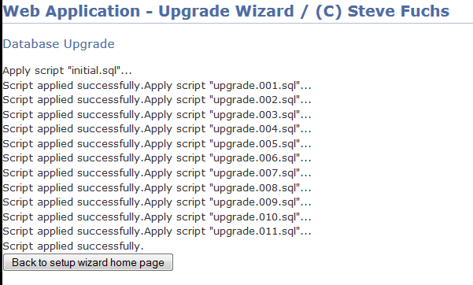
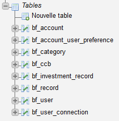
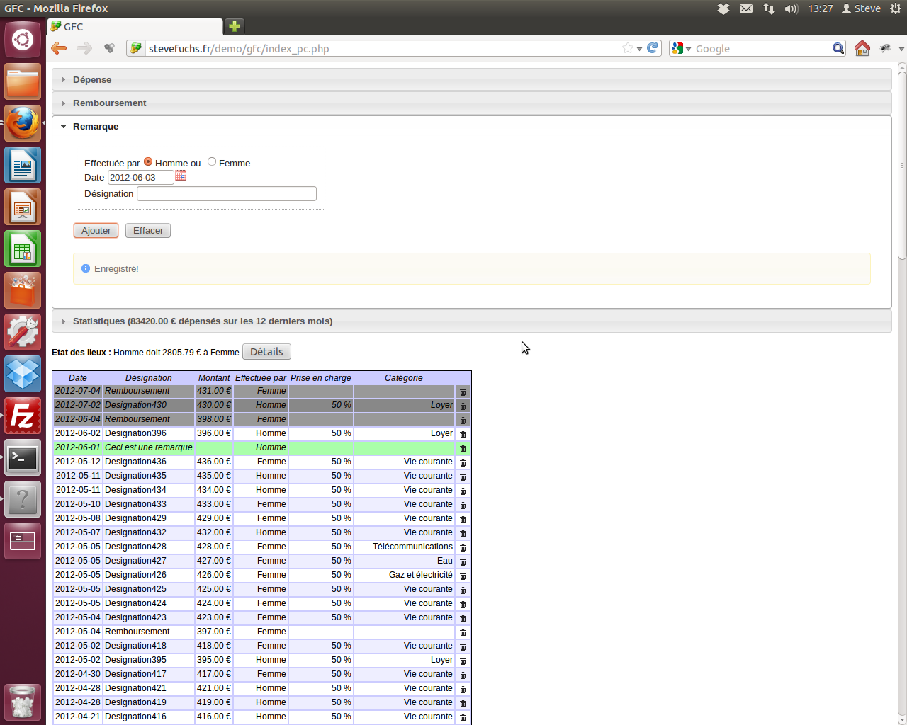
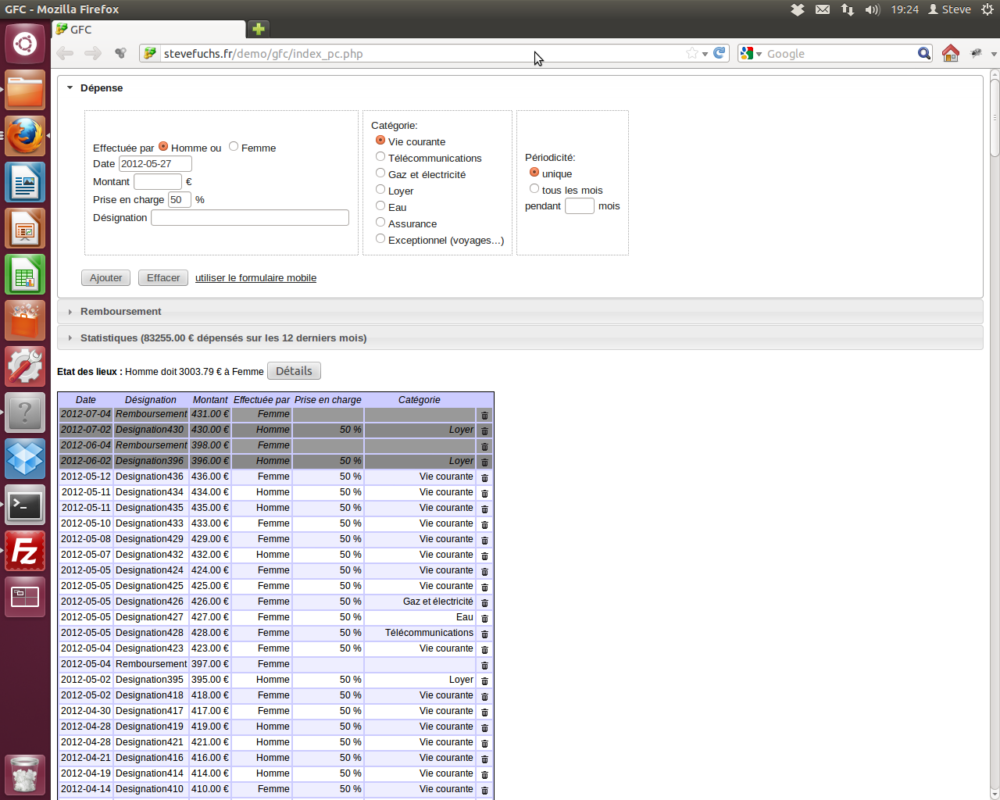
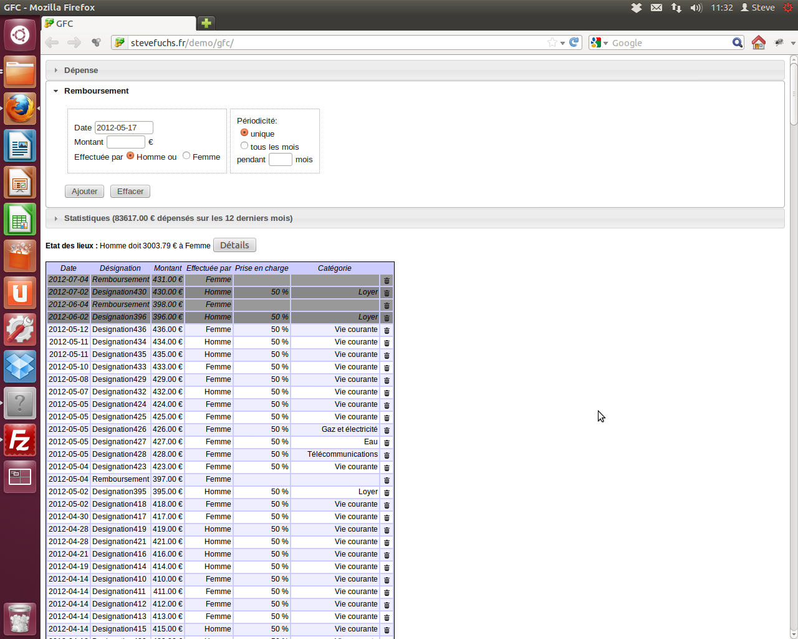
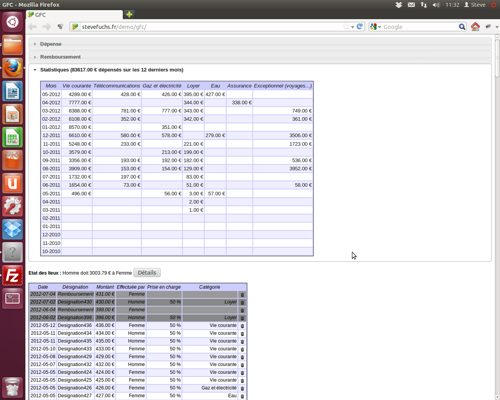
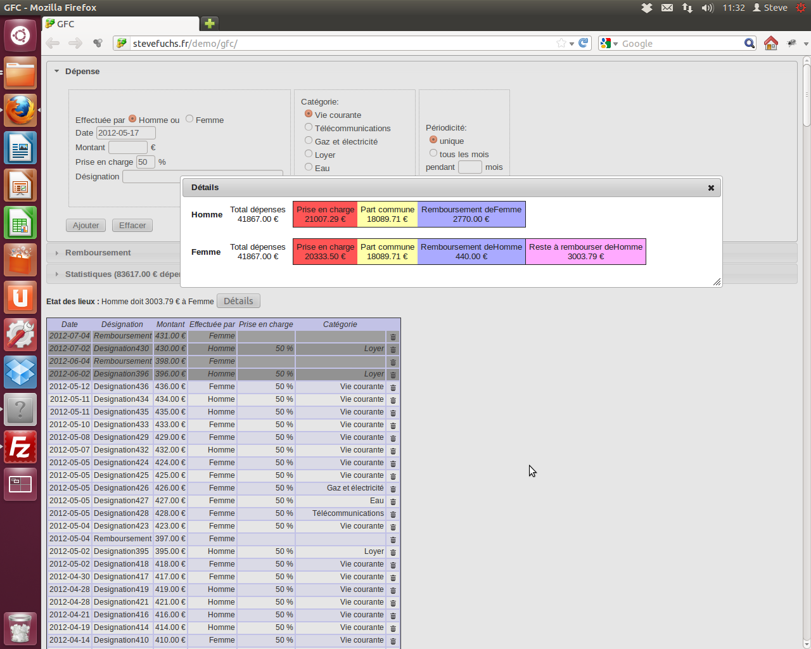
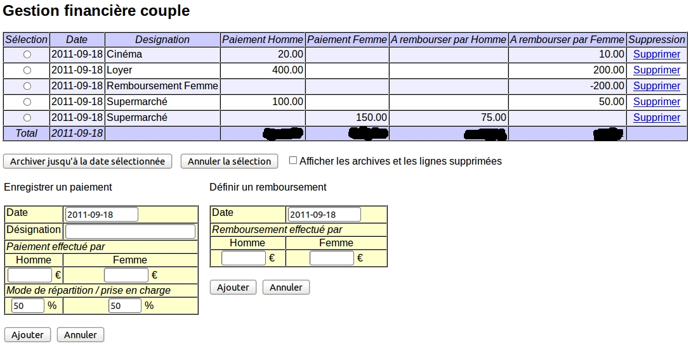

BudgetFox
BudgetFox est une application web de gestion de ses finances personnelles.
A ses débuts en 2010, cette application se nommait GFC (« Gestion Financière du Couple ») et avait pour but d’aider au partage des dépenses du couple.
Je l’ai faite évoluer régulièrement, en ajoutant des fonctionnalités progressivement. Elle permet dorénavant de suivre ses dépenses et ses revenus, de mieux gérer son budget, et depuis peu d’aider au suivi de ses placements financiers.
Démonstration
Téléchargement de l’application
Installation et mise à jour
Prérequis:
Un minimum de connaissances informatique est nécessaire: utilisation d’un client FTP, bases de MySQL…
Il faudra également un environnement offrant :
- Un emplacement web disposant de PHP 5.5
- Une base de données MySQL 5
Ce peut être un site Internet 1&1 comme ce site, un site sur un NAS Synology, voir encore un Raspberry Pi qui est capable de supporter mon application.
Sinon contactez moi pour que j’héberge et je gère votre application.
Installation:
- Créer une base de données MySQL avec le nom voulu (par exemple « budgetfox ») et l’interclassement voulu (par exemple « utf8_general_ci »).

- Télécharger l’archive de l’application sur GitHub, et la décompresser
- Uploader les fichiers dans un répertoire de votre emplacement web
- Editer le fichier ./configuration/configuration.php et remplir les paramètres requis (base de données...)
- Aller sur http://(votre site)/(emplacement BudgetFox)/setup/ et cliquer sur « Upgrade database » pour créer la base de données:

Ceci appliquera différent scripts:

qui créeront les tables de la base de données:

- Effacer le répertoire setup de votre répertoire d’installation
- Se rendre sur la page http://(votre site)/(emplacement BudgetFox)/ et se connecter avec le compte administrateur (mot de passe admin)
- Débuter par la configuration des utilisateurs, des comptes et des catégories depuis l’espace d’administration.
Mise à jour:
- Faites une sauvegarde de votre base de données et de votre répertoire web
- Dans ce dernier, effacer tout les sous-répertoires excepté « configuration »
- Télécharger l’archive de l’application sur GitHub
- Décompresser le zip et uploader l’ensemble des fichiers excepté le répertoire « configuration » dans votre répertoire d’installation
- Aller sur http://(votre site)/(emplacement BudgetFox)/setup/ et suivez les instructions comme lors de l’installation (la base de données sera mise à niveau)
- Effacer le répertoire « setup » de votre répertoire d’installation
Actualités
Les actualités de ce projet peuvent être décrites sur le flux dédié de mon blog.
Don
Et si vous voulez supportez mes projets (ou participer à mon bien-être), merci pour votre don que vous pouvez faire ci-dessous :-)
Versions précédentes
version 2.2

version 2.1




version 1.0.0
